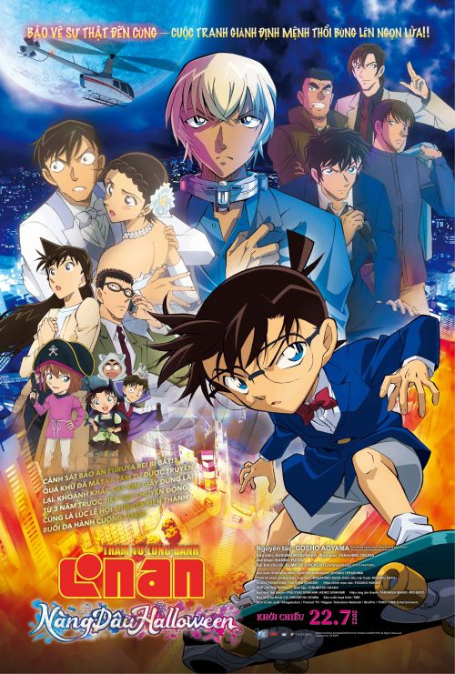
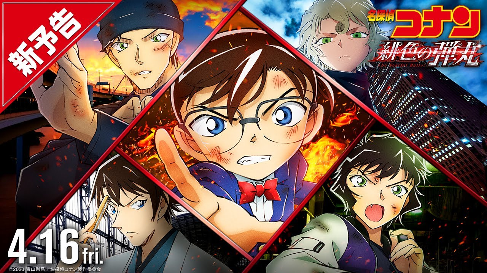

|  |
Giới thiệu Movie 25 Thám tử lừng danh Conan
Movie 25 lấy bối cảnh ở Shibuya, giữa Tokyo
sầm uất và mở đầu với “đám cưới” của cặp đôi
cảnh sát Takagi – Sato, được tổ chức trong một
khách sạn sang trọng. Giữa sự kiện, một gã côn
đồ bất ngờ xông vào tấn công và khiến Takagi bị
thương. Hình ảnh thần chết lần nữa hiện lên khiến
Sato bất an, tương tự như khoảnh khắc ngày thanh
tra Matsuda, đồng nghiệp của cô, hy sinh trong vụ
đánh bom 3 năm trước. |
|  |
Giới thiệu Movie 26 Thám tử lừng danh Conan Conan Movie 26 lấy bối cảnh tại Pacific Buoy - một trụ sở hàng hải của Interpol có nhiệm vụ kết nối các camera an ninh trên toàn thế giới. Nhóm của Conan, theo lời mời của Sonoko, cũng đến đảo Hachijo để xem cá voi. Tại đây, Conan nhận được thông tin về một nhân viên Europol bị ám sát. Cùng với đó, tính mạng Haibara Ai (cựu thành viên Tổ chức với mật danh Sherry) bị đe dọa, rất có thể thân phận của Haibara bị bại lộ trước Gin… |
|
Giới thiệu Movie 27 Thám tử lừng danh Conan Một lá thư bí ẩn mà Kid để lại tại nhà kho của tập đoàn Atoe ở Hakodate của Hokkaido, đã đánh dấu một cuộc phiêu lưu mới đầy kịch tính cho Movie 27. Lần này, mục tiêu của Kid không phải là một món báu vật có giá trị, mà là thanh kiếm của Toshizo Hijikata - Phó tướng của đội quân samurai cuối cùng mang tên Shinsengumi thời kỳ Edo. |